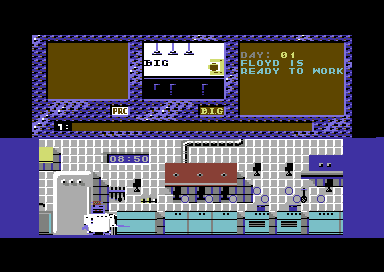

The Big Deal (Floyd 2)
Research in progress. The Big Deal (Floyd 2) appeared in 1986 under the Ariolasoft label. The catalogue credits Radarsoft. Known catalogue formats: Commodore 64, Apple II. This holding page will be expanded as contemporary material and first-hand recollections are reviewed.